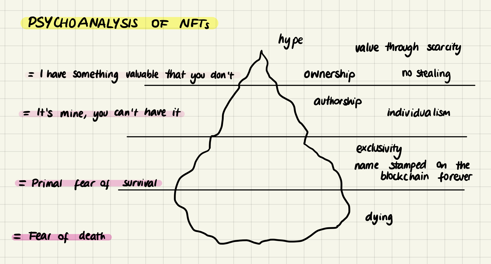

On Monday afternoon we had a very interesting Future talk by Sergio Uruena about how we shape society through innovation and how we must use responsibility when creating and using technologies. I resonated with a lot of what he was saying, so I took many notes. One of my favourite quotes is this one:
“Any form of future-making is also the equivalent of future-taking”
After the class, I teamed up with Marina and Paula to experiment with waste and biomaterials for our submission due at the end of the week. You can find the full documentation of that process here.

Mariana’s psychoanalysis on NFTs, abstracting on different levels.